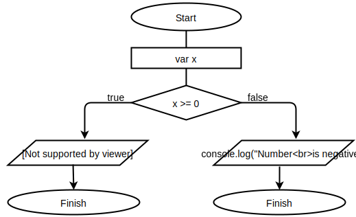
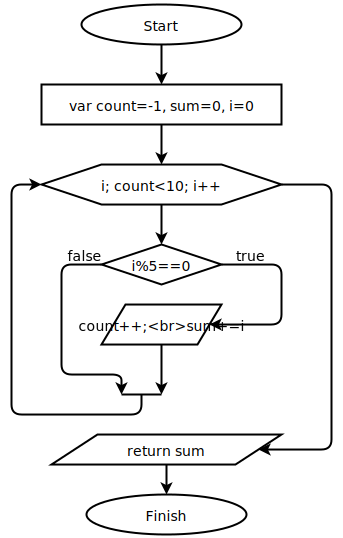

Емелина Ольга
Задание 1
Нарисуйте блок-схему алгоритма, который проверяет значение входного параметра x, и если это значение больше или равно 0, то возвращает в качестве результата строку "Число положительное", в противном случае - строку "Число отрицательное"

Задание 2
Нарисуте блок-схему алгоритма суммирования 10 чисел, кратных 5 ( начиная с 0 ) просуммировать нужно десять чисел 5, 10, 15, 20, 25, 30, 35, 40, 45, 50

Задание 3
Напилите кодец, который работает с массивом произвольных целых чисел var numbers = [ 254, 115, 78, 25, 91, 45, 37 ] Ваш скрипт должен вывести в консоль все числа больше 50